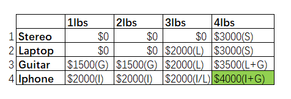
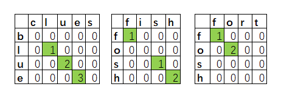

Algorithm the last but not the least

Dynamic Programing
knapsack problem
- You’re a thief with a knapsack that can carry 4 lb of goods, You have four items that you can put into the knapsack.
| Stereo | Laptop | Guitar | Iphone |
|---|---|---|---|
| $3000 | $2000 | $1500 | $2000 |
| 4lbs | 3lbs | 1lbs | 1lbs |
- solution of knapsack problem

longest common substring
- calculate the longest common substring between blue and clues, fosh compare with fish, fort, longest common substring is used for word wrap.
- solution of longest common substring

K-Nearest-Neighbors
- Classification, categorization into a group.
- Regression, predicting a response (like a number).
- Feature extraction means converting an item (like a fruit or a user) into a list of numbers that can be compared.
- Picking good features is an important part of a successful KNN algorithm.
Algorithms, Go Next
- Trees, self-banlance tree, B-trees, Red-black trees, Heaps, Splay trees.
- Inverted indexes, a hash that maps words to places where they appear.
- The Fourier transform, given a smoothie, the Fourier transform will tell you the ingredients in the smoothie.
- Parallel algorithms, consider for overhead of managing the parallelism and load balancing.
- Map Reduce, the map function and the reduce function.
- Bloom filters, Bloom filters are probabilistic data structures. Bloom filters are great because they take up very little space.
- False positives are possible. Google might say, “You’ve already crawled this site,” even though you haven’t.
- False negatives aren’t possible. If the bloom filter says, “You haven’t crawled this site,” then you definitely haven’t crawled this site.
- HyperLogLog, HyperLogLog approximates the number of unique elements in a set. Just like bloom filters, it won’t give you an exact answer, but it comes very close and uses only a fraction of the memory a task like this would otherwise take.
- The SHA algorithms, a one-way hash, can’t convert those hashes back to the original, and it’s locality insensitive, opposite with Simhash.
- Diffie-Hellman key exchange, private key and public key.
- Linear programming, is used to maximize something given some constraints, such as the knapsack problem.